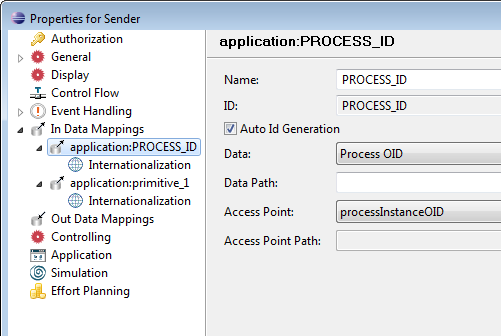

Using JMS Application and JMS Trigger
This tutorial helps you to work with JMS application and JMS trigger.
Using this example, you can:
While creating this tutorial, it is assumed that you have the knowledge of JMS 1.1 specifications. For more information on
JMS, please refer the chapter
Integrating JMS of the
Modeling Guide.
Importing the Example Model
You can download the tutorial ZIP file containing the example source code as well as the complete
model:
You find the sources for this tutorial in the jms folder of the ZIP file.
Working with JMS Application
We are creating two JMS applications. One application is used to send the request and another application is used to
give response to the request. So, let's create a model.
Creating a Model
Perform the following steps to create the JMS application model.
- Create a process named JMS_ApplicationProcess
- Create two manual activities named Manual Activity 2 and Manual Activity 3
- Similarly, create two application activities named Sender and Reciever
- Create three primitive data named Primitive Data 1 of String type, Primitive Data 2
of String type and Process OID of long type
- Create two JMS applications named JMS Application 1 and JMS Application 2
Setting Properties of JMS Application 1
- Open the properties of JMS Application 1
- Select JMS Application in the left pane of the properties page and then select
Request check box as a type
Figure: In Data Mapping - Sender
- Select Request from the left pane of the properties page to specify the request specific parameters
- Specify the following request parameters
Figure: Request Parameters
Note that you need to create the Connection Factory JNDI and Queue JNDI as per your requirement.
- Select Request from the left pane and click Add to specify request access points
- Specify Test_String as a request access point as shown in the following screenshot:
Figure: Request Access Point
- Specify processInstanceOID as a request access point as shown in the following screenshot:
Figure: Request Access Point
- Specify activityID as a request access point as shown in the following screenshot:
Figure: Request Access Point
Note that the default value is the ID of the activity Reciever.
Setting Properties of JMS Application 2
- Open the properties of JMS Application 2
- Select JMS Application in the left pane of the properties page and then select
Response check box as a type
Figure: JMS Application - Response
- Select Response from the left pane to specify the response specific parameters
- Specify the following response parameters
Figure: Response Parameters
- Select Response from the left pane and click Add to specify response access points
- Specify Test_String response access point as shown in the following screenshot:
Figure: Response Access Point
Specifying Data Mappings
- Specify the following In Data Mappings for the application activity Sender

Figure: In Data Mapping - Sender
- Specify the following In Data Mappings for the application activity Sender
Figure: In Data Mapping - Sender
- Specify the following out data mapping for the application activity Reciever
Figure: Out Data Mapping - Reciever
- Specify the following In Data Mapping for the Manual Activity 3
Figure: In Data Mapping - Manual Activity 3
- Connect manual trigger and these activities to each other. The created model would like as shown in the following
screenshot:
Figure: JMS Application Process
Deploying the JMS Model
Perform the following steps:
- Start the application server
- Configure JMS connection factory and connection queue
- Deploy the model
- Start the Stardust Portal as described in the chapter
Logging in the Stardust Portal of the
End User Handbook.
Login as administrator (motu/motu). You can use the Shift-F8 short key.
Executing the Workflow
Perform the following steps:
- In the Workflow Execution perspective, start the JMS_ApplicationProcess.
- Specify the input in the Primitive_1 text box and complete the activity
Figure: Send Data
As soon as you complete the activity, the JMS application activity receives the data and send it to the
Reciever application activity. The Reciever activity sends that to the manual activity 3 and then the manual
activity 3 displays the received data.
Figure: Data Received
Working with JMS Trigger
We are creating a process named Process_Sender and Process_Trigger. In the JMS application request access point, the default value is specified as
Process_Trigger - the ID of the process in which JMS trigger is defined. Process_Sender request is sent to the Process_Trigger.
The Process_Trigger gives the response to this request.
Creating a Process named Process_Sender
So, let's create a process called Process_Sender which sends the request to the Process_Trigger. Then, create a
process called Process_Trigger.
Perform the following steps:
- Create a manual trigger
- Create a manual activity named Enter Text and create an application activity named JMS_APP1
- Create a JMS application named JMS_Sender
- Create a primitive data named Sended_Data of type String
- Open the properties of the JMS_Sender application
- Select JMS Application from the left pane and select Request check box as a type
Figure: JMS_Sender - Request
- Select Request from the left pane of the properties page to specify the request specific parameters
- Specify the following request parameters
Figure: JMS_Sender - Request Parameters
- Select Request from the left pane and click Add to specify request access points
- Specify TextData as a request access point as shown in the following screenshot:
Figure: Request Access Point
- Specify processID as a request access point as shown in the following screenshot:
Figure: Request Access Point
Note that the ID of the Process_Trigger is specified as the default value which calls the process named Process_Trigger.
- Specify the following out data mapping for the manual activity Enter Text
Figure: Enter Text - Out Data Mapping
- Specify the following in data mapping for the application activity JMS_APP1
Figure: JMS_APP1 - In Data Mapping
The created process would like as shown in the following screenshot.
Figure: Process_Sender
Creating a Process named Process_Trigger
The Process_Trigger specifies the trigger parameters to call the Process_Sender process.
Perform the following steps:
- Create a JMS trigger
- Create a manual activity named Display Text
- Create a primitive data named Received Data of type string
- Create the in data mapping for the activity Display Text
Figure: In Data - Display Text
- Open the properties of the JMS trigger
- Select JMS Trigger from the left pane of the properties page
- Specify the following trigger specific parameters
Figure: JMS Trigger Parameters
- In the Properties page, select JMS Trigger and click Add to specify out access point
- Specify content as the out access point as shown in the following screenshot
Figure: JMS Trigger - Out Access Point
- Select Parameter Mapping from the left pane of the properties page and click Add
Figure: Parameter Mapping
- Specify the parameter mapping as shown in the following screenshot:
Figure: Parameter content
The created process would look like as shown in the following screenshot:
Figure: Process_Trigger
Deploying the Model
Perform the following steps:
- Start the application server
- Configure JMS connection factory and connection queue
- Deploy the model
- Start the Stardust Portal as described in the chapter
Logging in the Stardust Portal of the
End User Handbook.
Login as administrator (motu/motu). You can use the Shift-F8 short key.
Executing the Workflow
Perform the following steps:
- In the Workflow Execution perspective, start the Process_Sender process
- Enter details in the Enter Text manual activity and complete the activity
Figure: Enter Text
The JMS_APP1 application sends this request to the Process_Trigger.
That's why the call gets forwarded to the Process_Trigger process.
- Refresh the My Processes panel and start the Process_Trigger process
The Display Text activity of the Process_Trigger receives the data and displays it.
Figure: Response from JMS Application